概念
啥叫shell脚本呢？其实就是一个批处理文件，里面写了许多的命令，只需要运行这个文件，就相当于一次执行了许多命令
shell脚本的后缀名是 .sh
一个最简单的shell示例
第一种书写shell脚本的方式
#就相当于常规命令的操作集合
ls
pwd
ls -lah /bin如何执行它呢？
- 将这个文件命名为: test.sh
- 然后给它修改权限： chmod u=x test.sh
- 然后执行: ./test.sh即可（之所以加
./是为了加载执行该脚本所必须的环境变量）一般我们约定凡是自定义的脚本建议放到 /usr/local/sbin/ 目录下，这样做的目的是：一来可以更好地管理文档、二来以后接管你的管理员都知道自定义的脚本放在那里，方便维护
第二种书写shell脚本的方式
#! /bin/bash
# #!是表示该文件使用是bash语法，如果不设置该行，那么你的shell脚本就不能被执行；#表示注释
# In this script we will use variables
# Writen by util.you.com@gmail.com
d=`date`
echo "the script begin at $d"
echo "now we will sleep 2 seconds."
sleep 2
d1=`date`
# 定义变量的格式：变量名=`变量的值`
# 当在当前脚本中需要引用变量时，需要加上$符号即可
echo "the script end at $d1"然后将该文件命名为 demo.sh【通常是以sh作为后缀的，只是习惯而已，没有sh也可以执行】
然后这样运行：
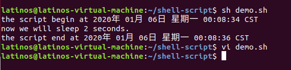
逻辑判断
if-else 的逻辑判断
- 不带 else 的
#! /bin/bash
echo -n "请输入你的成绩: "
# read 命令表示从控制台读取内容，此处即是读取用户输入的数字并且赋值给变量 score
read score
if [ $score -lt 60 ]
then
echo "抱歉，你没有通过考试."
fi
执行结果如下：
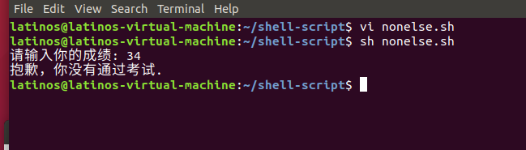
- 带有 else 的
#! /bin/bash
echo -n "请输入你的成绩: "
# read 命令表示从控制台读取内容，此处即是读取用户输入的数字并且赋值给变量 score
read score
if [ $score -lt 60 ]
then
echo "抱歉，你没有通过考试."
else
echo "恭喜你，顺利通过考试."
fi执行结果如下：
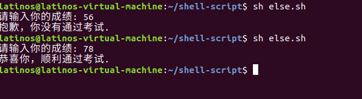
- 带有 elif 的
#! /bin/bash
echo -n "请输入你的成绩: "
# read 命令表示从控制台读取内容，此处即是读取用户输入的数字并且赋值给变量 score
read score
if [ $score -lt 60 ] # 调用变量通过 $ 符号
then
echo "抱歉，你没有通过考试."
elif [ $score -gt 60 ] && [ $score -lt 90 ]
then
echo "你的成绩属于中等水平"
elif [ $score -gt 90 ] && [ $score -lt 100 ] # 注意：[] 符号前后必须有空格，否则报错
then
echo "恭喜你，你的成绩属于优秀"
else
echo "抱歉，你的输入有误."
fi执行结果如下：
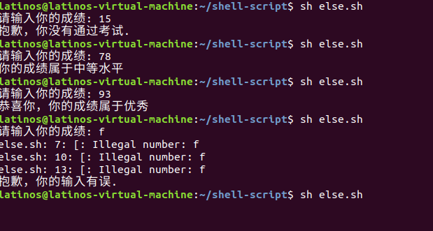
case 逻辑判断
#! /bin/bash
read -p "请输入一个整数: " n
a=`expr $n % 2` # 凡是需要调用到内置函数处理的都需要使用表达式引号 ``
case $a in
0)
echo "您输入的数字是偶数."
;;
*)
echo "您输入的数字是奇数."
;;
esac执行结果如下：
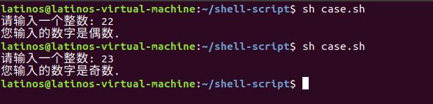
循环
for 循环
#!/bin/bash
for i in `seq 1 5`; do # seq: 用于产生从某个数到另外一个数之间的所有整数
echo $i
done执行结果如下：
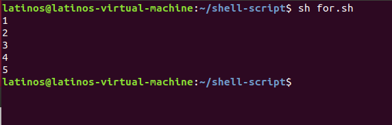
while 循环
#! /bin/bash
a=10 # 注意：a 后面不要有空格
while [ $a -ge 1 ]; do # 注意：[] 括号前后一定要有空格
echo "$a"
a=`expr $a - 1 ` # 注意：凡是使用到加减乘除等运算时，都需要使用 expr 表明此处需要运算符号
done执行结果如下：
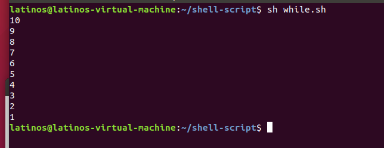
函数
#! /bin/bash
echo "请输入两个整数，并使用空格隔开: "
read num1 num2
sum(){
a=`expr $num1 + $num2`
echo "$num1 + $num2 = $a"
}
sum $num1 $num2 # 注意：这里必须要调用sum函数，并且传入用户输入的两个参数执行结果如下：
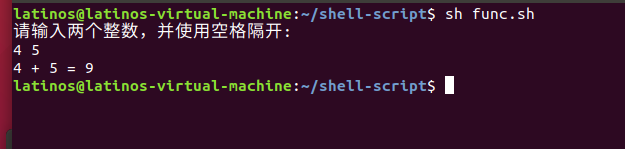
echo 的好玩点
#! /bin/bash
echo "Hello World 1"
echo -n "Hello world" #不带换行
echo -e "\e[0;33;1mhello\e[0m world" #带颜色的玩法
echo -e "\e[0;33;4mhello\e[0m world" #带颜色+下划线
echo -e "\e[0;33;5mhello\e[0m world" #带颜色+闪烁格式为
\e[背景色;前景色;高亮格式m
执行结果如下：
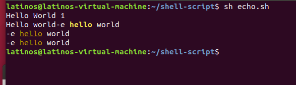
字符串操作
判断字符串是否为空
#! /bin/bash
s=""
if [ -z ${s} ] #注意：这里的[ ]前后必须有空格隔开，这个格式是固定的，shell中格式很严格
then
echo "字符串为空"
fi执行结果如下：
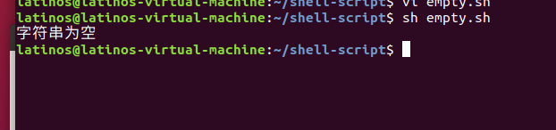
上述命令中使用了
-z运算符来判断字符串是否为空（在下面的字符串图中可以查找到），在 linux 中还有许多其它的运算符，如下图所示：
关于文件测试的运算符
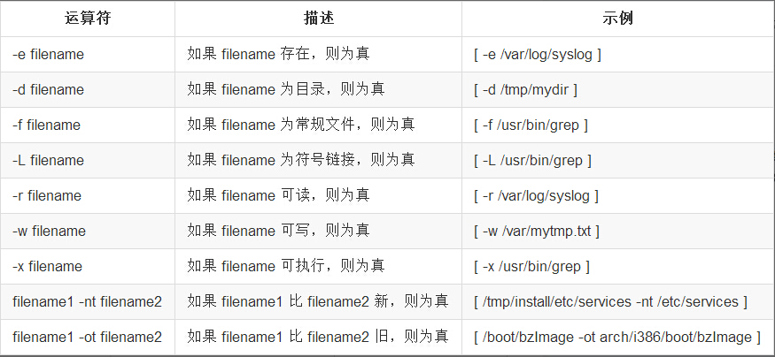关于字符串比较的运算符
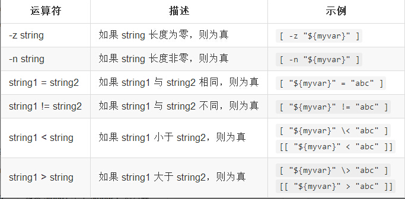
获取字符串的长度
使用 str 本身的方法
#! /bin/bash
str="abcdef"
echo "$str 字符串的长度是：${#str}"执行结果如下：
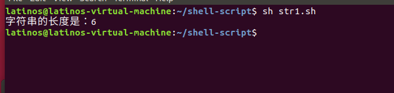
使用 awk 的 length 方法
#! /bin/bash
str="abcdef"
echo ${str} | awk '{print length($0)}' # 这里的 $0 表示是第一个输入，此处即指 ${str}执行结果如下：
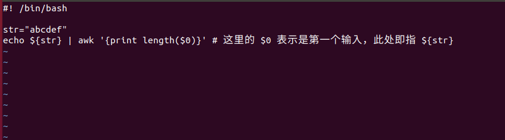
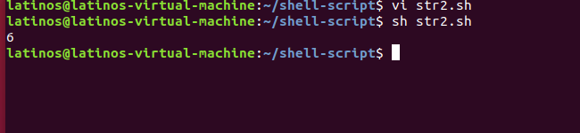
备注：最好用
{}来放置变量；也可以用length($0)来统计文件中每行的长度
使用 wc 的 -L 参数
#! /bin/bash
str="ABCDEF"
echo ${str} | wc -L执行结果如下：
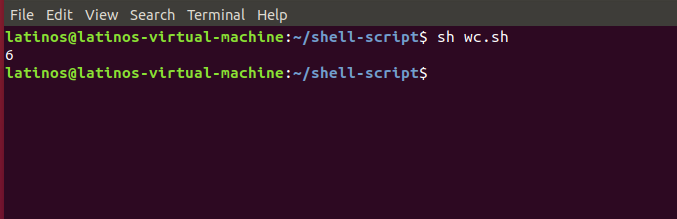
备注：
-L参数，对多行文件来说，表示打印最长行的长度！比如：cat /etc/passwd | wc -L表示/etc/passwd文件最长行的长度；
对单行字符串而言，表示当前字符串的长度
使用 expr 的 length 方法
#!/bin/bash
str="ABCDEF"
expr length ${str}执行结果如下：
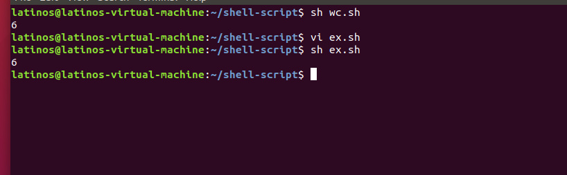
使用 expr 的 .* 技巧
#!/bin/bash
str="abef"
expr $str : ".*"执行结果如下：
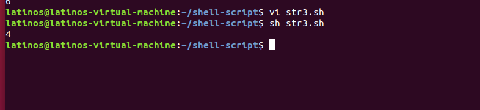
备注：
.*代表任意字符，即用任意字符来匹配字符串，结果是几就代表字符串的长度是几
关于获取字符串长度的方法很多，这里只是举例了几个，如果没有您需要的还请翻阅其它资料
替换目标字符串
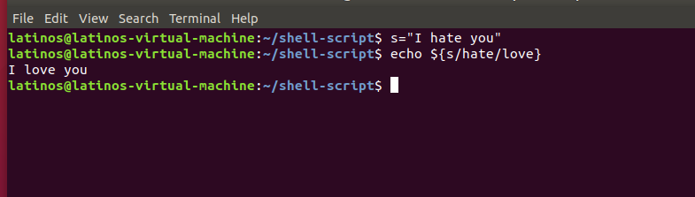 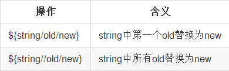截取子字符串
操作的API
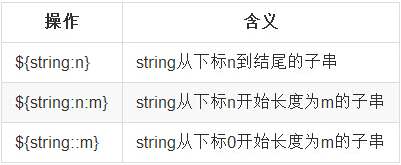
示例如下：
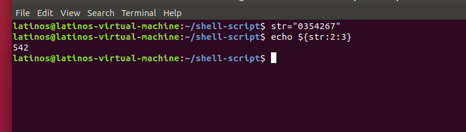
转义字符处理
关于整数的处理
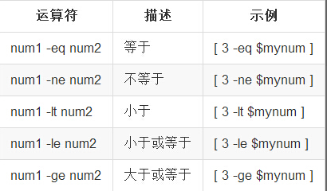关于逻辑处理
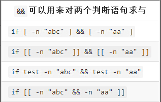小技巧：
&&、||还可以用来拼接命令，达到按前一个命令成功与否来决定是否执行后一个命令的效果
示例如下：
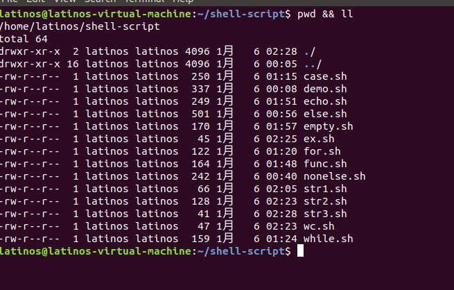
文件名的获取
#!/bin/bash
s="/root/test/dir/subdir/abc.txt"
echo ${s##*/} # abc.txt
echo ${s%/*} # /root/test/dir/subdir
echo ${s##*.} # txt执行结果如下：
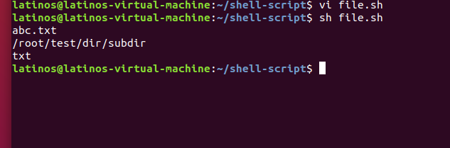
小技巧：
- 1、获取文件名：
${path##*/}(相当于basename命令的功能) ，path只是一个变量名称而已；- 2、获取目录名：
${path%/*}（相当于dirname命令的功能）；- 3、获取后缀名：
${path##*.}
重定向
标准输入流、标准输出流、标准错误流
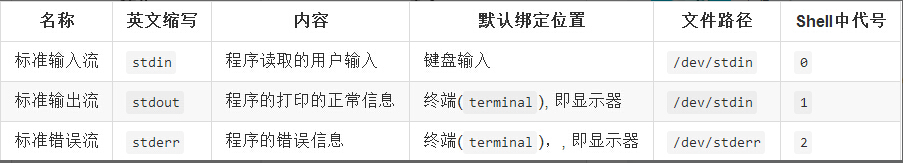
重定向一览表
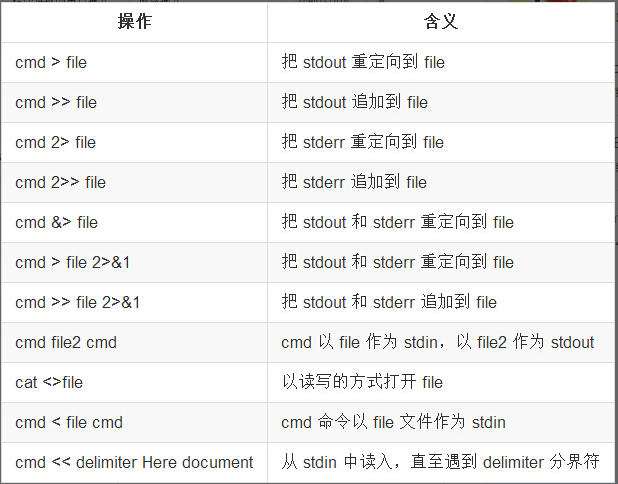
把程序打印的内容输出到文件
#!/bin/bash
#以下两种方式都会将 `Hello World`写入到hello.txt中（若不存在则创建）
echo "Hello World" > hello.txt #hello.txt原有的内容将被覆盖
echo "你好哦" >> hello.txt #hello.txt原有内容后追加'Hello World'执行结果如下：
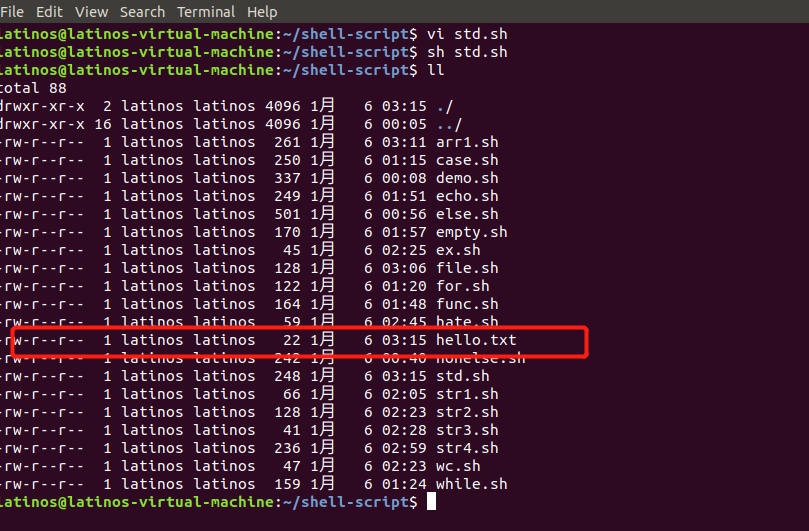
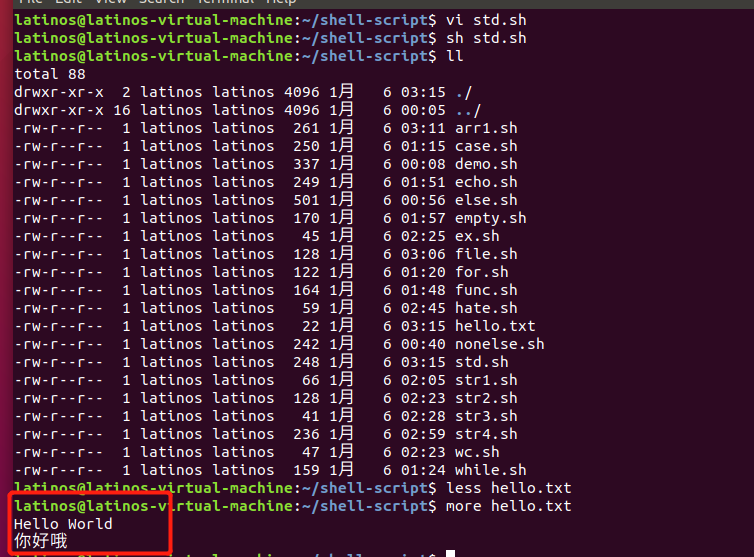
重定向标准错误流(stderr)
把程序的错误信息输出到文件，例如文件路径中不存在+++这个文件：
#!/bin/bash
#以下两种方式都会将输出的错误信息输出到 'err.txt'中（若不存在则创建）
ls +++ 2> err.txt
ls +++ 2>> err.txt #err.txt原有内容后追加内容执行结果如下：
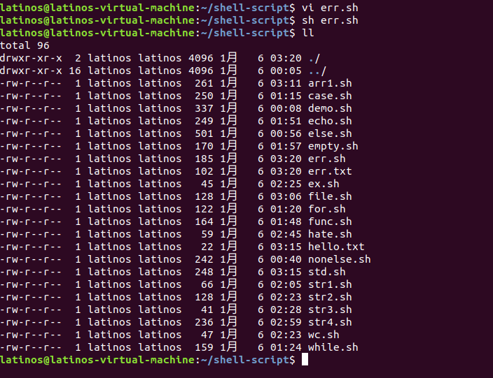
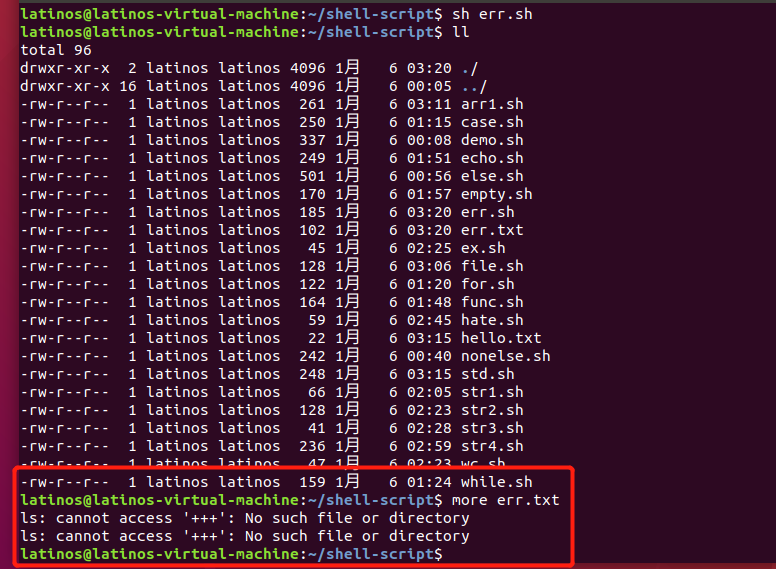
可以看到已经将你操作 ls +++ 的错误成功地输出到 err.txt 中了
查看当前目录大小
#! /bin/bash
cap=`du -h --max-depth=1 ./`
echo $cap执行结果如下：
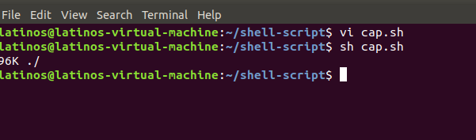